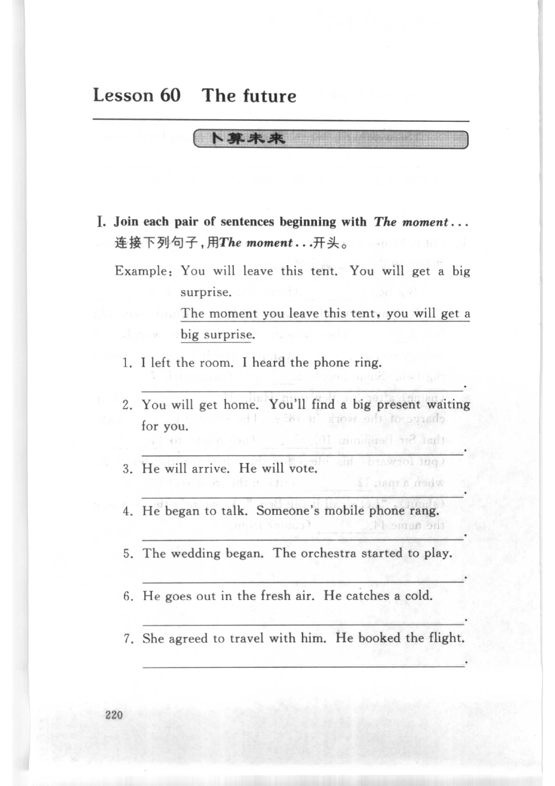
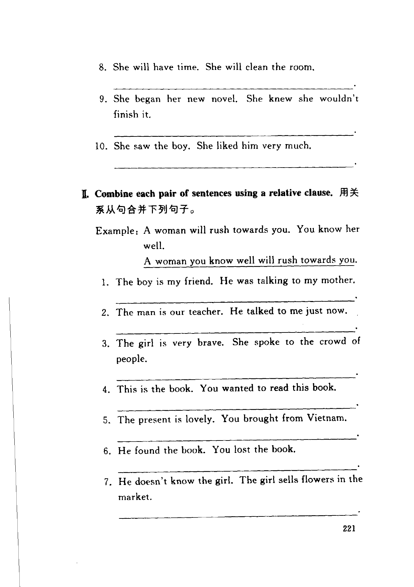
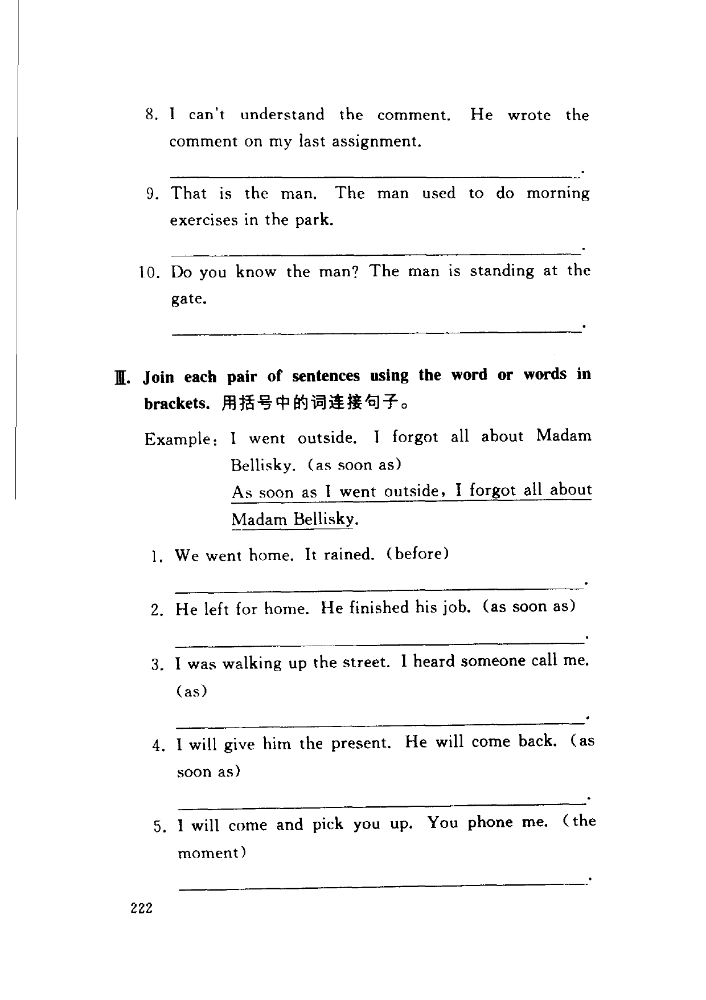
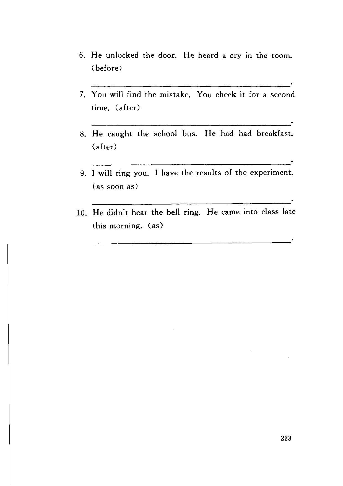

Grammar exercises · 语法练习
I. Join each pair of sentences beginning with The moment…
连接下列句子，用 The moment… 开头。
Example: You will leave this tent. You will get a big surprise.
The moment you leave this tent, you will get a big surprise.
-
I. The moment… — I left the room. I heard the phone ring.
-
I. The moment… — You will get home. You'll find a big present waiting for you.
-
I. The moment… — He will arrive. He will vote.
-
I. The moment… — He began to talk. Someone's mobile phone rang.
-
I. The moment… — The wedding began. The orchestra started to play.
-
I. The moment… — He goes out in the fresh air. He catches a cold.
-
I. The moment… — She agreed to travel with him. He booked the flight.
-
I. The moment… — She will have time. She will clean the room.
-
I. The moment… — She began her new novel. She knew she wouldn't finish it.
-
I. The moment… — She saw the boy. She liked him very much.
II. Combine each pair of sentences using a relative clause.
用关系从句合并下列句子。
Example: A woman will rush towards you. You know her well.
A woman you know well will rush towards you.
-
II. Relative clause — The boy is my friend. He was talking to my mother.
-
II. Relative clause — The man is our teacher. He talked to me just now.
-
II. Relative clause — The girl is very brave. She spoke to the crowd of people.
-
II. Relative clause — This is the book. You wanted to read this book.
-
II. Relative clause — The present is lovely. You brought from Vietnam.
-
II. Relative clause — He found the book. You lost the book.
-
II. Relative clause — He doesn't know the girl. The girl sells flowers in the market.
-
II. Relative clause — I can't understand the comment. He wrote the comment on my last assignment.
-
II. Relative clause — That is the man. The man used to do morning exercises in the park.
-
II. Relative clause — Do you know the man? The man is standing at the gate.
III. Join each pair of sentences using the word or words in brackets.
用括号中的词连接句子。
Example: I went outside. I forgot all about Madam Bellisky. (as soon as)
As soon as I went outside, I forgot all about Madam Bellisky.
-
III. Join with given words — We went home. It rained. (before)
-
III. Join with given words — He left for home. He finished his job. (as soon as)
-
III. Join with given words — I was walking up the street. I heard someone call me. (as)
-
III. Join with given words — I will give him the present. He will come back. (as soon as)
-
III. Join with given words — I will come and pick you up. You phone me. (the moment)
-
III. Join with given words — He unlocked the door. He heard a cry in the room. (before)
-
III. Join with given words — You will find the mistake. You check it for a second time. (after)
-
III. Join with given words — He caught the school bus. He had had breakfast. (after)
-
III. Join with given words — I will ring you. I have the results of the experiment. (as soon as)
-
III. Join with given words — He didn't hear the bell ring. He came into class late this morning. (as)
Original images · 原图对照
Expand a page to compare it with the transcription. Open the original in a new tab to zoom in.
展开原图核对文字，也可以在新标签页打开原图放大查看。
Book page 220 · Exercise I (The moment… join sentences, example and items 1–7)
Open original · 打开原图 ↗ Download original · 下载原图


Book page 221 · Exercise I (items 8–10) and Exercise II (relative clause combine sentences, example and items 1–7)
Open original · 打开原图 ↗ Download original · 下载原图


Book page 222 · Exercise II (items 8–10) and Exercise III (join sentences with given words, example and items 1–5)
Open original · 打开原图 ↗ Download original · 下载原图


Book page 223 · Exercise III (items 6–10)
Open original · 打开原图 ↗ Download original · 下载原图


Your notes and answers
Use this space for longer responses or exercises that do not have an individual answer box.